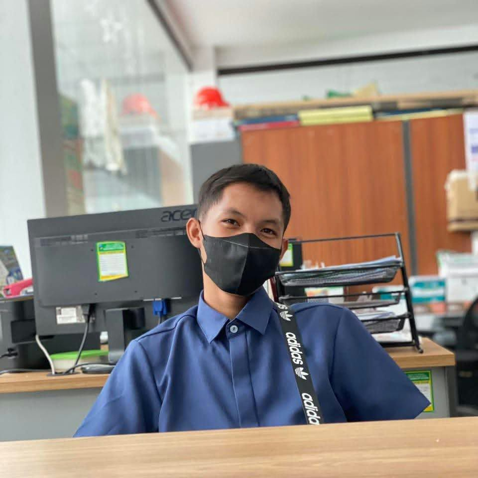

HTML
Basic knowledge of structuring web pages.
PERSONAL PORTFOLIO
A 2nd-year IT student at Holy Cross of Davao College, interested in technology, learning new skills, and exploring the digital world.
Explore My Portfolio
GET TO KNOW ME
I am a Bachelor of Science in Information Technology student currently in my second year at Holy Cross of Davao College. I am developing my knowledge in programming, web development, and computer troubleshooting. I enjoy learning through practice and improving my technical abilities.
Course: BS Information Technology
Year Level: 2nd Year
School: Holy Cross of Davao College
MY BACKGROUND
Bachelor of Science in Information Technology
2nd Year College
WHAT I'M LEARNING
Basic knowledge of structuring web pages.
Basic knowledge of styling and designing websites.
Basic programming concepts and Java coding.
Basic skills in identifying and solving computer issues.
IN MY FREE TIME
I enjoy playing PC games during my free time.
I like exploring websites and discovering useful information online.
LET'S CONNECT
Thank you for visiting my personal portfolio.
Email address has not been added yet.